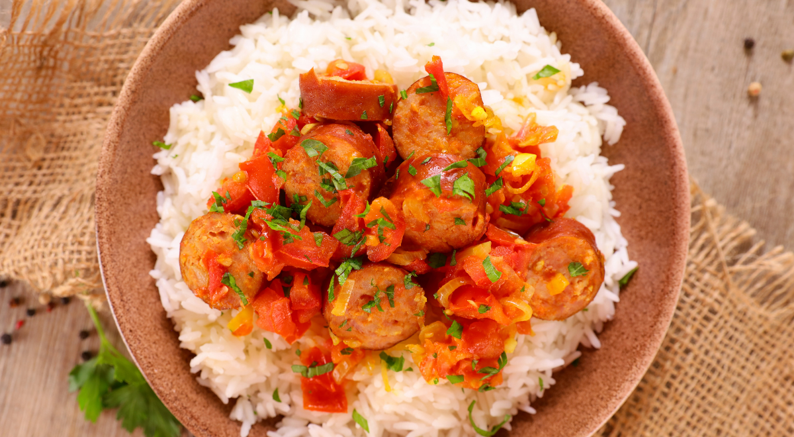
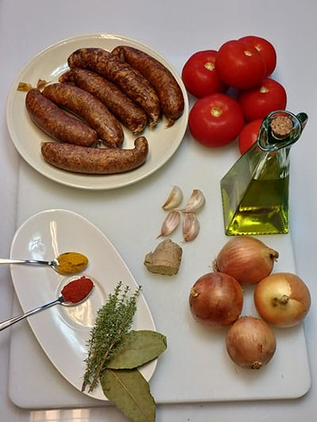
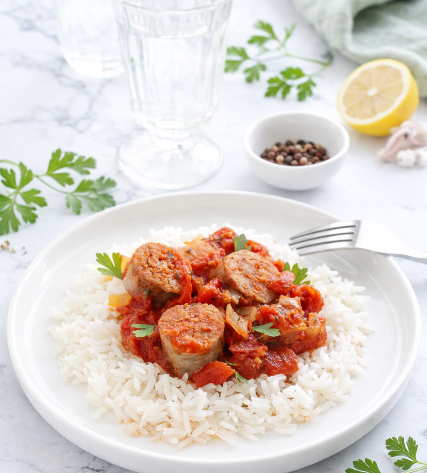

Rougail saucisses

Le rougail saucisse est sans doute LE plat qui incarne le mieux la cuisine créole réunionnaise. Né du métissage des cultures de l'île , malgache, indienne, africaine, chinoise et européenne , il se transmet de génération en génération et rassemble les familles autour d'une marmite parfumée. Saucisses fondantes, oignon, tomate et épices : un plat mijoté simple, généreux et plein de soleil.
Préparation:20 minutes Cuisson:30 minutes Total:50 minutes
Ingrédients pour 6 personnes
- 9 Saucisses (fumée, de Toulouse, Monbéliard ou créoles
- 6 Oignons rouges émincés
- 6 Gousses d'ail hachées
- 1 Morceau de gingembre frais râpé
- 6 Tomates fraîches
- 0,5 Cuillères à café de Curcuma
- 1 Belle branche de thym
- 1 Belle branche de laurier
- Huile d'olive
- Sel & Poivre
- 600gr de Riz Basmatie pour l'accompagnement

Préparation
- Épluchez l’ail, l’oignon et le gingembre. Coupez l’oignon en dés, pressez l’ail et râpez le gingembre. Lavez et séchez les brins de thym.
- Versez l’huile dans une sauteuse et faites revenir l’oignon avec le thym pendant environ 3 minutes, en remuant régulièrement. L’oignon doit commencer à devenir tendre sans trop colorer.
- Ajoutez ensuite l’ail pressé, le gingembre râpé, les tomates, le piment, le sel et le poivre. Laissez cuire 10 minutes à couvert, puis encore 10 minutes à découvert. La sauce doit réduire doucement et bien compoter : inutile de précipiter cette étape, c’est elle qui concentre les saveurs.
- Pendant ce temps, préparez les saucisses. Si vous utilisez des saucisses de Montbéliard, faites-les d’abord cuire 10 minutes dans l’eau bouillante. Égouttez-les, tranchez-les puis faites-les griller à la poêle. Si vous choisissez d’autres saucisses, coupez-les en rondelles d’environ 1 à 1,5 cm d’épaisseur avant de les faire dorer.
- Quand la sauce tomate est bien compotée, ajoutez les rondelles de saucisses grillées. Mélangez et laissez encore mijoter 10 à 15 minutes, juste le temps qu’elles s’imprègnent bien de la sauce.
- Servez bien chaud avec du riz thaï ou basmati

Conseil nutrition
Pour profiter pleinement des saveurs de ce rougail saucisse tout en gardant un repas équilibré, le secret réside dans la préparation des saucisses : pensez à bien les piquer et à les blanchir 10 à 15 minutes dans l'eau bouillante avant de les faire dorer afin d'éliminer une grande partie du gras et du sel. Vous pouvez également opter pour des saucisses de volaille (poulet ou dinde), naturellement plus maigres, et limiter l'ajout d'huile en faisant revenir les oignons dans le léger suc de la viande. Côté accompagnement, servez ce plat avec une portion raisonnable de riz complet ou basmati (environ un quart de l'assiette) et complétez généreusement avec une salade verte ou des légumes croquants pour faire le plein de fibres et assurer une bonne satiété.
Astuces
Pour relever votre rougail, vous pouvez ajouter 2 ou 3 piments oiseaux. Les amateurs (et les plus téméraires) apprécieront ! Et si vous n'avez pas de tomates fraîches, remplacez-les par des tomates pelées en boite, votre rougail saucisses sera aussi bon !
Retour page d'accueil